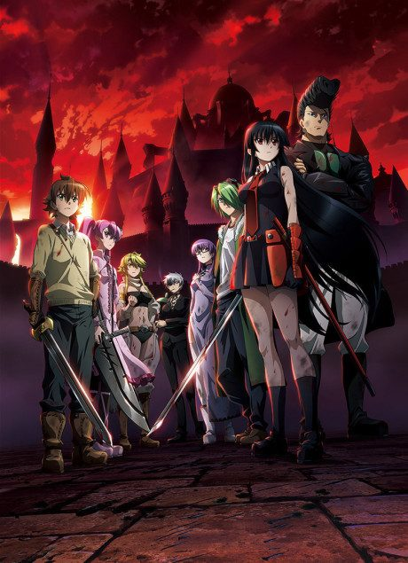

The Heroic Legend of Arslan
アルスラーン戦記 (TV)
Arslan, a young prince, loses his kingdom to invaders and sets out to reclaim it.
We haven't found where the anime ends in the manga yet.
7.3AniList score
—Animeter, no votes yet
33episodes, 2 seasons
Rate it or report where you stopped
2 seasons, 33 episodes
In airing order. Episode numbers on this site count straight through every season, so season 2 starts at episode 26.
1
2015 · TV
The Heroic Legend of Arslan
Episodes1–2525 ep
2
2016 · TV
The Heroic Legend of Arslan: Dust Storm Dance
Episodes26–338 ep
Sources: AniList
More like The Heroic Legend of Arslan
 Done9.0
Done9.0
 Manga Vol. 47.3
Manga Vol. 47.3
 Original8.5
Original8.5
 Manga Ch. 228.4
Manga Ch. 228.4
 Manga Ch. 1588.2
Manga Ch. 1588.2
 Manga Ch. 888.4
Manga Ch. 888.4
 Own end8.1
Own end8.1
 Unclear7.7
Unclear7.7
 Unclear7.4
Unclear7.4
 Original8.8
Original8.8
 Done8.5
Done8.5

Manga Ch. 397.3